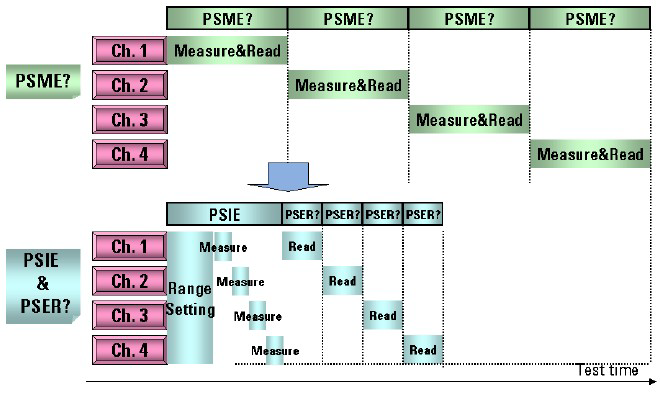

Parallel Channel Control for DPS Current Measurement
This function is controlled by the following three firmware commands:
- DPSE, DPSE? - (Define Power Supply External trigger measurement)
- PSIE, PSIE? - (Power Supply Internal trigger Execute)
- PSER? - (Power Supply External trigger measurement Read results)
The above commands set up, execute the measurements and retrieves the results. For setting up the voltage to be applied for the test, see Set Fixed Power Supply Levels (legacy).
Typically, the PSME? command that is called from the test method APIs and testmethods is used for current measurements using the Device Power Supply (DPS). This is helpful for programming DPS current measurements easily but may not be suitable for programming high throughput test that uses multiple DPS channels. This is because the PSME? command measures multiple DPS channels serially.
The PSIE command can control multiple DPS channels in parallel and the measurement results can be read by using the PSER? command in serial. This allows you to program best throughput test that uses multiple DPS channels such as multi-site testing as in the figure below:

where, "Ch." corresponds to the DPS channel on the DPS board and "Measure" for the PSME? contains the time for range setting.
You can program a test that controls multiple DPS channels in parallel as shown below:
- Define a measurement set that contains a limit for pass/fail judgment for each pin with the DPSE command. Settings for each pin are managed using this measurement set number.
- Start the current measurement of the measurement set with the PSIE command.
- Read the measurement results by using the PSER? command. You can specify a measurement set number and data type, current values in [A], pass/fail judgments for each pin or a global pass/fail judgment for all pins.